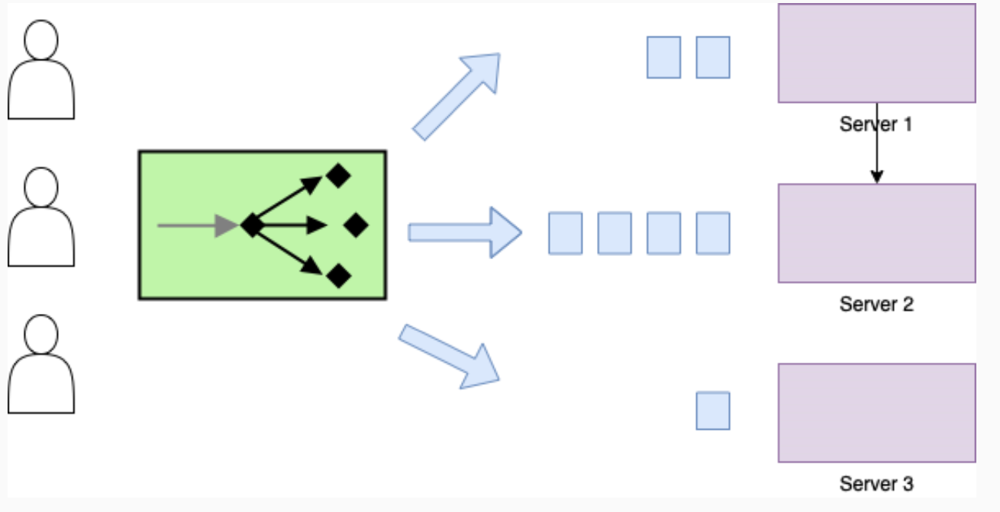
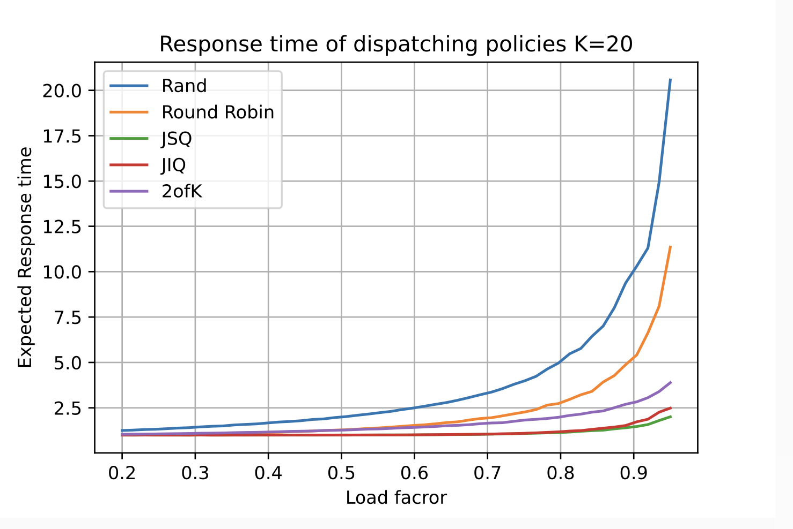
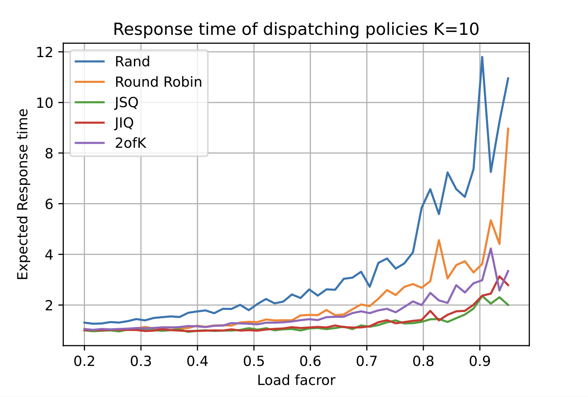

Dispatching Strategies
…How to allocate resources?
The operation that consists of pairing resources (servers and jobs) is called dispatching.
1 Random dispatcher
- The servers are identical;
- Then for each job, a server is chosen with probability \(\frac{1}{K}\)
- Completely stateless protocol (does not depend on the past or on the state of the servers’ queues)

1.1 Effects:
- The random policy reduces the intensity of the arrival process seen by a server but the coefficient of variation of the inter-arrival times is not altered;
- If the servers have different speed the optimal probability of routing can be computed but depends on the intensity of the arrival process.
1.2 Benefits
- Easy to implement different replicas
- The dispatchers are completely independent (no sync messages required)
- Avoid the introduction of a single point of failure: high reliability.
2 Round Robin dispatcher
- \(K\) servers at identical speed;
- Jobs are sent to each server in turn
- Each server sees an arrival stream with intensity \(\frac{\lambda}{K}\), not Poisson.
2.1 Benefits
- RR performs better than random because it reduces the
variance of the inter-arrival times.
3 Join The Shortest Queue (JSQ)
- \(K\) identical servers with local queues;
The dispatcher chooses the server according to this policy:
- Identify the set of servers with the shortest queue.
- Among the set pick a server at random with uniform distribution.
This implies: Stateful protocol.
3.1 Benefits
- JSQ is the optimal policy with respect to the minimization of the expected waiting time;
- Replicas are easy to handle.
3.2 Drawbacks
- The number of messages exchanged with the server is quite high.
- For large systems, it is usually considered unfeasibe.
4 Join The Idle Queue (JIQ)
- \(K\) identical servers with local queues;
The dispatcher chooses the server according to this policy:
- When a server becomes empty, it sends a message to the dispatcher;
- The dispatcher keeps track of the idle servers;
- Choose among the idle servers an empty one at random;
- If no idle server is available, choose a server at random.
This discipline requires the sytem to send messages to dispatcher in an asynchronous way.
4.1 Benefits
- The policy works well with many servers;
- Replicas are easy to handle;
- The number of messages exchanged with the servers is small.
4.2 Drawbacks
- On heavy load and not many servers it tends to behave like RANDOM.
5 The power of 2 dispatcher (2ofK)
- \(K\) identical servers with local queues;
The dispatcher chooses the server according to this policy:
- Choose 2 servers at random and send a query for the state;
- The servers reply with their current backlog;
- Choose the server with the minimum backlog among the 2;
- In the case of time, choose one of the 2 servers at random.
5.1 Benefits
- The policy works well with not many servers;
- Replicas are easy to handle;
- The number of messages exchanged with the servers is small;
- It never chooses the worst server;
- We can choose more than 2 servers.
5.2 Drawbacks
- Sub-optimal w.r.t. JSQ.
6 Comparison

